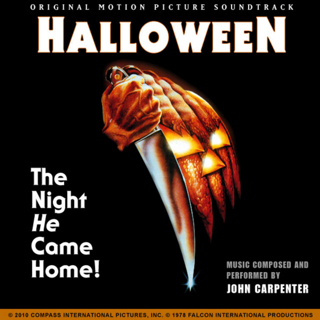
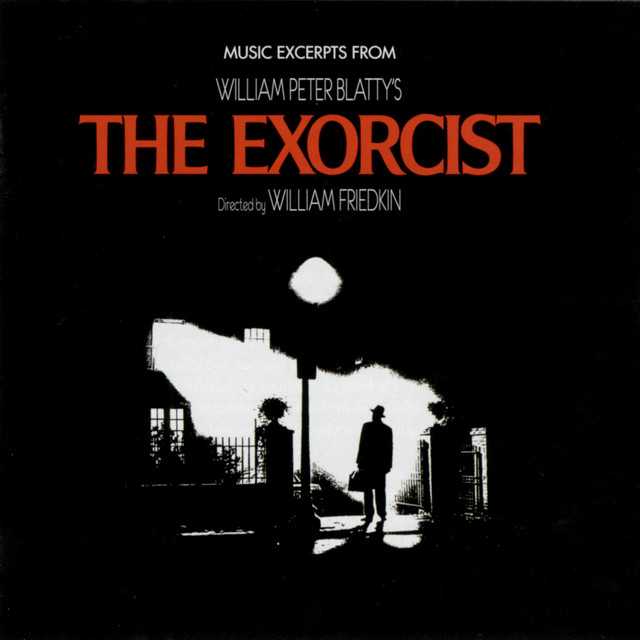
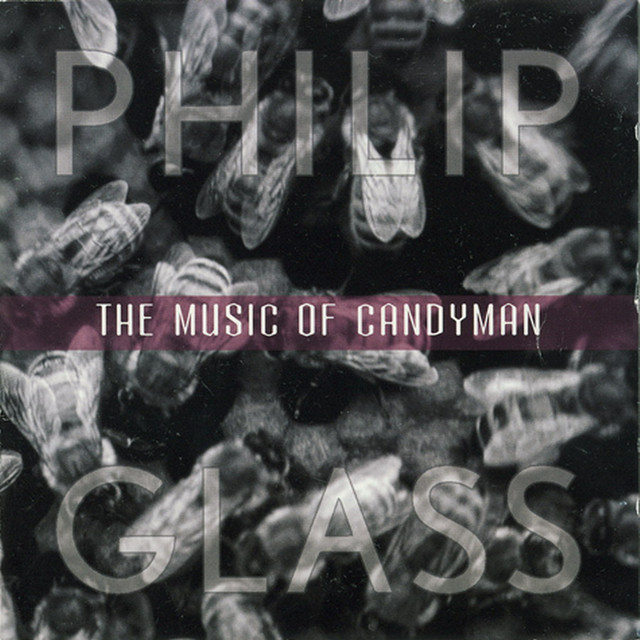

John Carpenter's minimalist yet chilling score is instantly recognizable and has become synonymous with the horror genre.

Mike Oldfield's "Tubular Bells" is a haunting and memorable piece of music that captures the film's supernatural terror.

The 1992 slasher film "Candyman" uses a score with classical and blues influences, enhancing the film's eerie and hypnotic atmosphere.